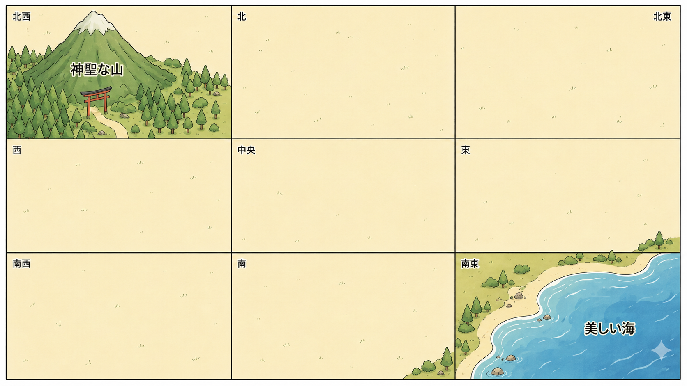

議事録カード 難しい版
⚠️ この版では、「候補」「希望」「一時期」「見直し後」など、決定ではない情報が混じっています。
情報が古いのか・新しいのか、案なのか・決定なのかを慎重に読み取ってください。
他のメンバーの画面は見ず、声のみで情報を共有しましょう。
情報が古いのか・新しいのか、案なのか・決定なのかを慎重に読み取ってください。
他のメンバーの画面は見ず、声のみで情報を共有しましょう。
① グループの人数を選んでください。 ② 自分の担当ボタンをクリックすると議事録が表示されます。
① グループ人数
② 自分の担当
← まず人数を選んでください
〜 人数と担当ボタンを選ぶと議事録カードが表示されます 〜
白地図（参考）
画像を開く ↗